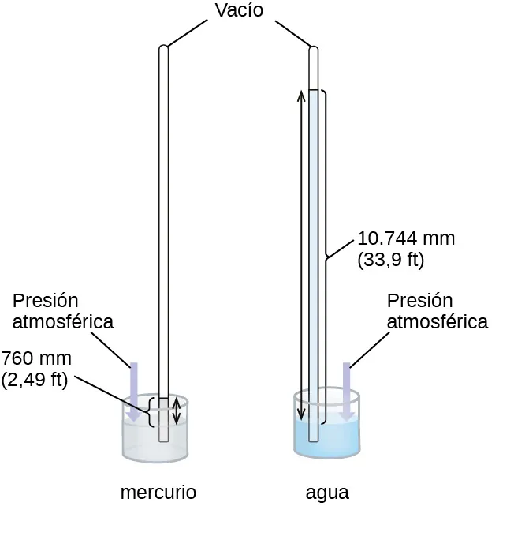
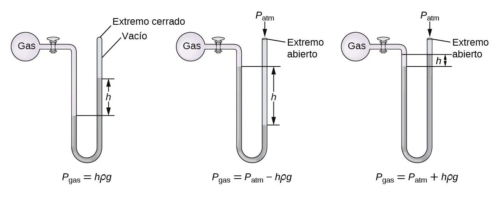
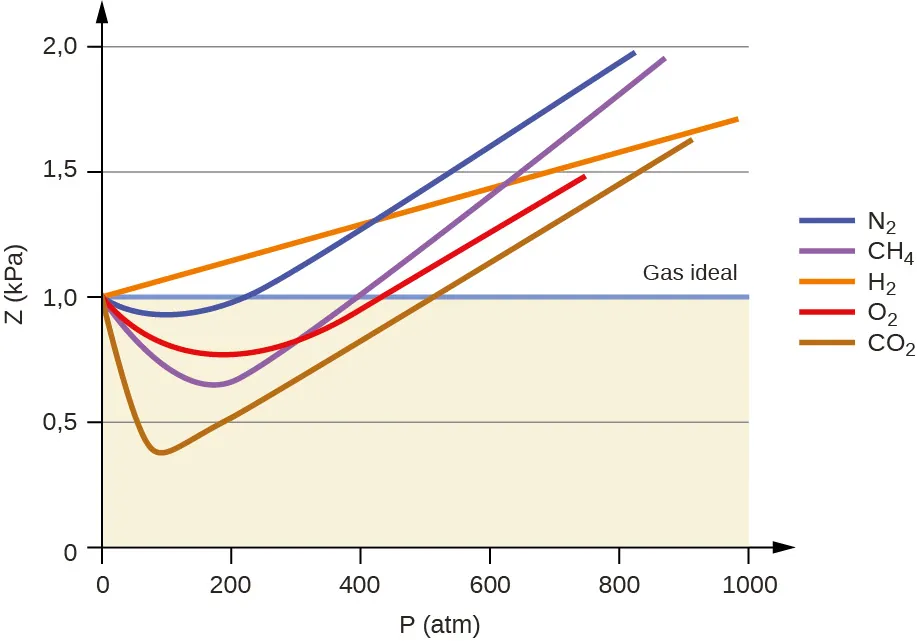
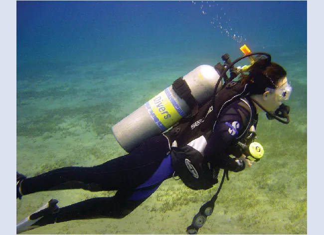

IES Valle del Alberche

📘 Enunciado
Partiendo de la ecuación de estado de los gases ideales \(pV = nRT\), demostrar que en un proceso isotérmico (a temperatura constante) con una cantidad fija de gas, el producto de la presión por el volumen permanece constante:


🎯 Objetivo
Demostrar matemáticamente la ley experimental de Boyle-Mariotte a partir de la ecuación de Clapeyron, mostrando que la constancia de la temperatura impone una relación de proporcionalidad inversa entre presión y volumen. Esta ley es fundamental para comprender cómo se comportan los gases cuando se comprimen o expanden manteniendo la temperatura constante.



🔬 Procedimiento


✅ Resultado
O equivalentemente, comparando dos estados:


🧪 DESMITIFICANDO la Ley de Boyle-Mariotte Púlsame
Un gas ocupa \(4.0\,\text{L}\) a una presión de \(1.5\,\text{atm}\). Si se comprime isotérmicamente hasta un volumen de \(2.0\,\text{L}\), ¿cuál será la nueva presión?
Paso 1: Identificar datos: \(V_1 = 4.0\,\text{L}\), \(p_1 = 1.5\,\text{atm}\), \(V_2 = 2.0\,\text{L}\). Proceso isotérmico → \(T = \text{cte}\).
Paso 2: Aplicar Boyle-Mariotte: \(p_1 V_1 = p_2 V_2\).
Paso 3: Despejar \(p_2 = \frac{p_1 V_1}{V_2} = \frac{1.5 \times 4.0}{2.0} = 3.0\,\text{atm}\).
Resultado: La presión final es \(3.0\,\text{atm}\).
Un gas se expande isotérmicamente desde \(2.8\,\text{atm}\) hasta \(1.2\,\text{atm}\). Si el volumen final es \(0.75\,\text{L}\), calcula el volumen inicial.
Paso 1: Datos: \(p_1 = 2.8\,\text{atm}\), \(p_2 = 1.2\,\text{atm}\), \(V_2 = 0.75\,\text{L}\).
Paso 2: \(p_1 V_1 = p_2 V_2\) → \(V_1 = \frac{p_2 V_2}{p_1} = \frac{1.2 \times 0.75}{2.8} = \frac{0.9}{2.8} \approx 0.321\,\text{L}\).
Resultado: El volumen inicial era \(0.32\,\text{L}\).
Un buceador tiene un pulmón con un volumen de \(5.0\,\text{L}\) en la superficie, donde la presión es \(1.0\,\text{atm}\). Si desciende a \(20\,\text{m}\) de profundidad, donde la presión es \(3.0\,\text{atm}\), y la temperatura del agua es constante, ¿qué volumen tendrían sus pulmones si no respirara? (Suponer comportamiento ideal).
Paso 1: Datos: \(p_1 = 1.0\,\text{atm}\), \(V_1 = 5.0\,\text{L}\), \(p_2 = 3.0\,\text{atm}\). Proceso isotérmico.
Paso 2: \(p_1 V_1 = p_2 V_2\) → \(V_2 = \frac{p_1 V_1}{p_2} = \frac{1.0 \times 5.0}{3.0} \approx 1.67\,\text{L}\).
Resultado: El volumen se reduciría a \(1.67\,\text{L}\) (menos de la mitad). Esto explica el peligro de las embolias al ascender.


Un gas a \(25^\circ\text{C}\) ocupa \(6.0\,\text{L}\) a \(0.8\,\text{atm}\). Se comprime isotérmicamente hasta \(2.4\,\text{atm}\).
- a) Calcula el volumen final.
- b) Si se representan ambos estados en un diagrama \(p\)-\(V\), ¿qué tipo de curva une los puntos? ¿Cuál es la ecuación de esa curva?
a) \(p_1 V_1 = p_2 V_2\) → \(V_2 = \frac{0.8 \times 6.0}{2.4} = 2.0\,\text{L}\).
b) La curva es una hipérbola equilátera (isoterma) con ecuación \(p = \frac{k}{V}\), donde \(k = p_1 V_1 = 0.8 \times 6.0 = 4.8\,\text{atm·L}\).
Una jeringa contiene \(10\,\text{cm}^3\) de aire a presión atmosférica (\(1.0\,\text{atm}\)). Se tapa la salida y se empuja el émbolo hasta que el volumen es de \(4.0\,\text{cm}^3\), manteniendo la temperatura constante. Calcula la presión en el interior de la jeringa en \(\text{atm}\) y en \(\text{Pa}\).
Dato: \(1\,\text{atm} = 101\,325\,\text{Pa}\).
Paso 1: Datos: \(V_1 = 10\,\text{cm}^3\), \(p_1 = 1.0\,\text{atm}\), \(V_2 = 4.0\,\text{cm}^3\).
Paso 2: \(p_2 = \frac{p_1 V_1}{V_2} = \frac{1.0 \times 10}{4.0} = 2.5\,\text{atm}\).
Paso 3: Convertir a Pa: \(2.5 \times 101\,325 = 253\,312.5\,\text{Pa} \approx 2.53 \times 10^5\,\text{Pa}\).
Resultado: La presión es \(2.5\,\text{atm}\) o \(2.53 \times 10^5\,\text{Pa}\).

Con un par de multiplicaciones y algo de práctica, esto es más fácil de lo que parece.
(Los detalles sobre lo que entra en las pruebas escritas se publicarán periódicamente en M.Teams).